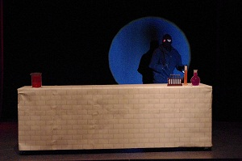

|

LES CLOWNS PARLENT DU NEZ - Xavier Gauthier, Anne Rougée et Denis Falfoyo Jeu clownesque Eliane Le Van Kiem, ass. mise en scène Didier Boulle, 2010 |
ACCUEIL SCENOGRAPHIE COSTUME ART DU FAUX CONTACT |
|
MÊME MOI
LA SEMEUSE ILLUMINATI JEAN ET BÉATRICE APPARTEMENT F46 JUMP BAGAGE ANTOINE ET CLÉOPÂTRE UNE BIÈRE DANS PIANO LE MENSONGE DE SALOMÉ PROKALO PIERRES DE GUÉ LE DRAGON LA PRINCESSE ET LE PLOMBIER LA PEAU D'ÉLISA AU SOMMET DE LA TERRE TIERCE MINEURE QUELQU'UN VA VENIR ESPÈCES D'ESPACES SI L'ÉTÉ REVENAIT LES CENDRES DU PASSÉ |